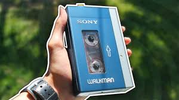

About Sony & the Walkman
Sony Corporation, founded in Tokyo in 1946, is a global leader in electronics, entertainment, and gaming. Known for innovations like the Trinitron TV and PlayStation, Sony has shaped modern technology.
The Walkman Revolution
The Sony Walkman TPS-L2 (1979) was the first portable cassette player. It let users listen to music privately with lightweight headphones, sparking a global cultural shift.
Over the years, Sony released CD Walkmans (1980s) and digital MP3 players, but the original cassette Walkman remains a symbol of personal freedom.
Discover Our Products